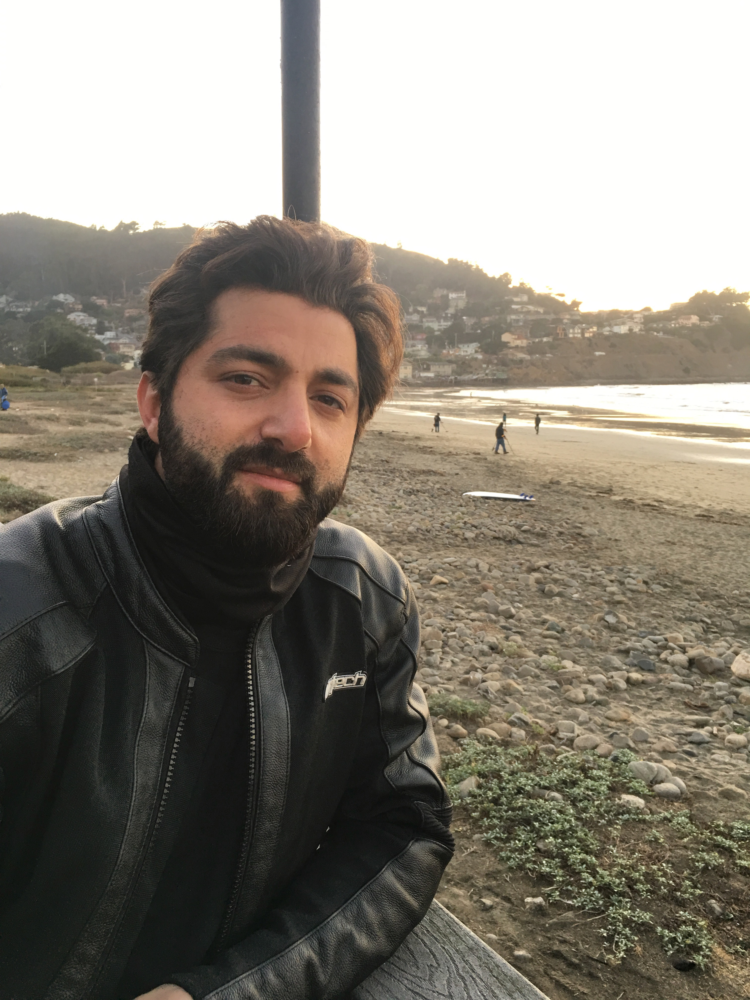

There has been so much change with the coming mobile apps in web development that the focus on web development for mobiles is getting more and maybe eventually the web development desing will only be done for mobiles only. Here is a nice article The Turn of the Century detailing that broadly.
My name is Muttalip Aydemir. I was born in Turkey and I have been living in the states for about 10 years. I graduated from San Francisco State University, majoring in Sociology. I have been interested in computers for a while so I started my journey by taking some classes at City College.Besides all that, I like listening to metal music, reading, training for boxing and cruising on my motorcyle. My next adventure will include hang-gliding...
One of the websites that I spent time on was The Great Courses where there are tons of different subjects, from art to computer science, to botanic, to pyschology and so on. I got inspired there and decided my journey. I have been trying to learn web development and programming through various resources. I am trying to learn Python, HTML&CSS, Java Script and SQL. With all of them combined I should be able to get a decent job and after that I'd like to pursue more in depth like machine learning. To do all that, hard work is requiered. So I have come to realize that it is a good idea to learn with different resources. For now I am aming to get better at web development.